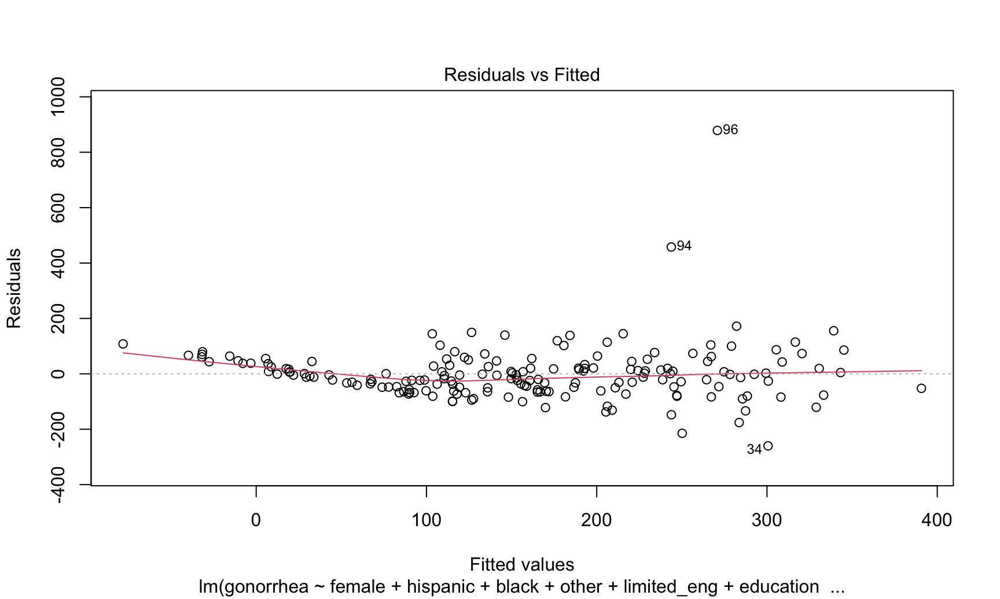
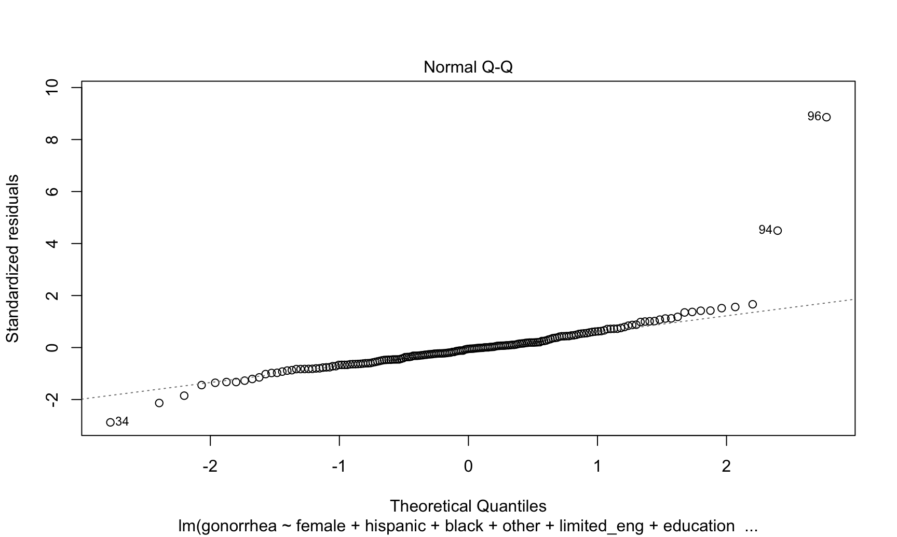
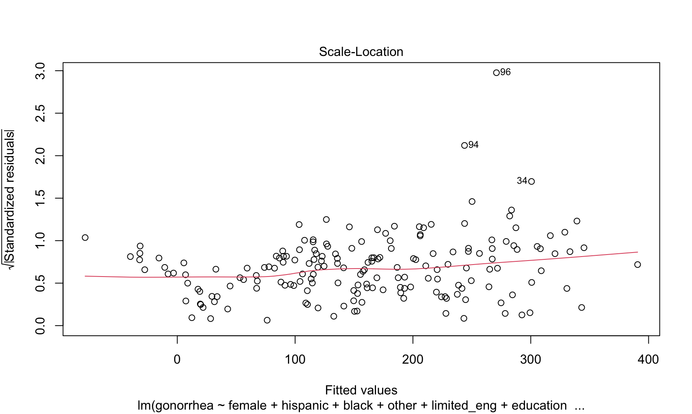
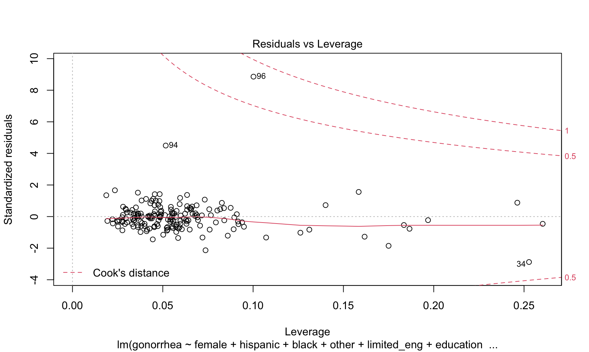

Let’s start by fitting a linear model to the gonorrhea outcome variable using our stepwise selection process with AIC. The chosen predictors are indicated in the table below.
predictors_df = read.csv("./data/predictors.csv")
outcome_df = read.csv("./data/outcomes.csv")
#Combined predictors with SMM outcome
gonorrhea_df = predictors_df %>%
mutate(gonorrhea = outcome_df$gonorrhea) %>%
dplyr::select(-total_pop)
#Fit the full model
full_gonorrhea_linear.model <- lm(gonorrhea~., data = gonorrhea_df)
#Stepwise regression model
step_gonorrhea_linear.model <- stepAIC(full_gonorrhea_linear.model, direction = "both",
trace = FALSE)
#Display converged model
step_gonorrhea_linear.model %>%
broom::tidy() %>%
knitr::kable(digits = 3)| term | estimate | std.error | statistic | p.value |
|---|---|---|---|---|
| (Intercept) | 982.725 | 222.614 | 4.414 | 0.000 |
| female | -18.221 | 4.255 | -4.283 | 0.000 |
| hispanic | 1.269 | 0.826 | 1.536 | 0.126 |
| black | 2.259 | 0.671 | 3.366 | 0.001 |
| other | 2.203 | 0.893 | 2.466 | 0.015 |
| limited_eng | -2.176 | 1.326 | -1.641 | 0.103 |
| education | -3.744 | 2.193 | -1.708 | 0.090 |
| poverty | 14.104 | 1.979 | 7.127 | 0.000 |
| medicaid_enroll | -5.796 | 1.600 | -3.622 | 0.000 |
| late_no_prenatal_care | 5.892 | 3.881 | 1.518 | 0.131 |
| clinics_and_chc_density | 27.272 | 16.002 | 1.704 | 0.090 |
The variables female, hispanic, black, other, limited_eng, education, poverty, medicaid_enroll, late_no_prenatal_care, and clinics_and_chc_density were chosen in the final model. The model has an R-squared value of 0.476492, representing a reasonably good fit.
However, we were concerned about our assumptions for linear regression, so they need to be checked before we can interpret any results.
#Regression diagnostics
plot(step_gonorrhea_linear.model)
#Shapiro test
gonorrhea_linear_shapiro = shapiro.test(residuals(step_gonorrhea_linear.model))The Normal Q-Q plot has fat tails, suggesting violation of the normality assumption. This is confirmed with the Shapiro-Wilk test for normality, which has a p-value of 5.697824910^{-17}. The plot of residuals vs fitted values has non-random variance, suggesting a violation of the homoskedasticity assumption, also indicated by the scale-location plot, where the line is not straight.
We’ll stop this analysis here since it’s clear the model doesn’t follow linear assumptions, but it’s important to note that further analysis would also have to investigate the potential outliers & high leverage points found in the residuals vs. leverage plot.
A quick look at the dataset shows that both these data points, corresponding to the neighborhoods of Clinton (Hell’s Kitchen) and Hudson Yards-Chelsea-Flat Iron-Union Square possess the highest and second highest rates of gonorrhea, respectively. These numbers are at odds with their majority white, affluent, and well-educated residents. We posit it may be because they have high LGBTQ+ populations - prior research suggests that MSM (men who have sex with men) are at much higher risk of STDs than women or heterosexual men.
Because our outcome variable, gonorrhea rate is really a count variable (number of cases) made into a rate by dividing by total population (another variable in our dataset), we could run a Poisson regression to model the outcome. Running a Poisson model on gonorrhea case rate approximates fitting a Poisson regression on a gonorrhea count variable, using neighborhood population as an offset.
full_gonorrhea_poisson.model <- glm(gonorrhea~., data=gonorrhea_df, family=poisson(link = "log"))
step_gonorrhea_poisson.model <- stepAIC(full_gonorrhea_poisson.model, direction = "both",
trace = FALSE)
step_gonorrhea_poisson.model$aic## [1] Inf#Display converged model
step_gonorrhea_poisson.model %>%
broom::tidy() %>%
knitr::kable(digits = 3)| term | estimate | std.error | statistic | p.value |
|---|---|---|---|---|
| (Intercept) | 12.337 | 7.681 | 1.606 | 0.108 |
| female | -0.147 | 0.004 | -36.281 | 0.000 |
| hispanic | 0.013 | 0.077 | 0.167 | 0.867 |
| white | -0.004 | 0.077 | -0.057 | 0.954 |
| black | 0.014 | 0.077 | 0.180 | 0.857 |
| other | 0.010 | 0.077 | 0.134 | 0.893 |
| foreign_born | 0.001 | 0.001 | 0.577 | 0.564 |
| limited_eng | -0.017 | 0.002 | -10.487 | 0.000 |
| education | -0.040 | 0.002 | -19.284 | 0.000 |
| poverty | 0.092 | 0.002 | 54.618 | 0.000 |
| unemployment | 0.009 | 0.003 | 3.350 | 0.001 |
| health_ins | -0.003 | 0.003 | -0.975 | 0.329 |
| medicaid_enroll | -0.040 | 0.001 | -29.180 | 0.000 |
| late_no_prenatal_care | 0.036 | 0.003 | 11.918 | 0.000 |
| clinics_and_chc_density | 0.148 | 0.016 | 9.500 | 0.000 |
| non_pcmd_density | 0.001 | 0.000 | 4.403 | 0.000 |
Our Poisson model selected 15 predictors in the converged model, suggesting that model is not as well-specified as we would like. This is further indicated by the high dispersion of the model (calculated as deviance/df). A key assumption of Poisson model is that the conditional mean must equal the conditional variance. A dispersion value close to 1 shows the assumption is met, but the dispersion in our model is 45.940339, which indicates that our model is overdispersed.
There are several ways to address overdispersion in Poisson models, but for our purposes we will use a negative binomial model, an expansion on the Poisson model that adds a dispersion parameter alpha to account for either over or underdispersion.
full_gonorrhea_neg_bin.model <- glm.nb(gonorrhea~., data=gonorrhea_df)
step_gonorrhea_neg_bin.model <- stepAIC(full_gonorrhea_neg_bin.model, direction = "both",
trace = FALSE)
#Display converged model
step_gonorrhea_neg_bin.model %>%
broom::tidy() %>%
knitr::kable(digits = 3)| term | estimate | std.error | statistic | p.value |
|---|---|---|---|---|
| (Intercept) | 10.844 | 1.177 | 9.211 | 0.000 |
| female | -0.136 | 0.023 | -6.014 | 0.000 |
| hispanic | 0.017 | 0.004 | 3.981 | 0.000 |
| black | 0.020 | 0.004 | 5.847 | 0.000 |
| other | 0.021 | 0.005 | 4.559 | 0.000 |
| limited_eng | -0.022 | 0.007 | -3.107 | 0.002 |
| education | -0.022 | 0.012 | -1.887 | 0.059 |
| poverty | 0.103 | 0.011 | 9.801 | 0.000 |
| medicaid_enroll | -0.046 | 0.008 | -5.396 | 0.000 |
| late_no_prenatal_care | 0.029 | 0.020 | 1.429 | 0.153 |
| non_pcmd_density | 0.002 | 0.001 | 2.227 | 0.026 |
The negative binomial model selection process has yielded a more parsimonious set of predictors, including 8 predictors: female, hispanic, black, other, limited_eng, education, poverty, medicaid_enroll, late_no_prenatal_care and non_pcmd_density.
This is much better! The model is more parsimonious, and satisfies assumptions, which is not necessarily true for the linear and Poisson models. Let’s compare the three models using AIC:
The negative binomial model is slightly better than the linear model, and both the linear and negative binomial models are much better than the Poisson model. Since we’ve established AIC as our criteria, we’ll use the negative binomial analysis moving forward.
Ayeshra Acharya, Zaynub Ibrahim, Cynthia Liu, Shelley Shen
Data visualizations and analyses performed using RStudio (v1.3.1093-1) and QGIS (v3.16 1 'Hannover').
Interaction added to visualizations with plotly (v1.55.2).